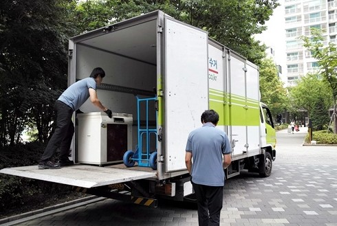

냉장고·세탁기·TV·에어컨 수거 기준과 이사 전 예약 요령 총정리

폐가전 무상방문수거는 가정에서 사용하던 냉장고, 세탁기, TV와 같은 전기·전자제품을 예약한 날짜에 수거 담당자가 방문해 가져가는 서비스입니다. 대형 제품을 주민이 직접 집 밖으로 옮기거나 별도의 폐기 수수료를 내지 않아도 된다는 점이 가장 큰 장점입니다.
예약한 품목은 원칙적으로 가정 안에서 방문 수거하며, 이용자가 요청하면 현관문 앞이나 마당처럼 문전 수거 방식으로 진행할 수도 있습니다. 다만 수거 담당자가 안전하게 접근할 수 있어야 하며, 사다리차나 크레인이 필요하거나 제품을 분해해야만 이동할 수 있는 환경은 미리 조치해야 합니다.
폐가전 무상방문수거는 E-순환거버넌스의 폐가전 방문수거 배출예약시스템에서 신청할 수 있습니다. 신청 화면은 개인정보 이용 동의, 수거정보, 배출품목 입력, 기본정보와 본인인증, 예약 확인 및 완료 순서로 진행됩니다.
같은 시·도 안에서도 수거 가능한 요일과 일정이 다를 수 있습니다. 예약 가능 지역 조회에서 시·도, 시·군·구와 읍·면·동을 선택해 현재 주소에서 서비스 이용이 가능한지 먼저 확인하세요. 조회 목록에 나오지 않는 지역은 고객센터를 통해 별도로 확인해야 합니다.
제품이 놓인 실제 주소와 연락 가능한 휴대전화 번호를 입력하고 선택 가능한 날짜 가운데 방문 희망일을 고릅니다. 이사 성수기나 월말에는 예약이 몰릴 수 있으므로 이사 날짜가 정해졌다면 미리 일정을 확인하는 것이 좋습니다.
냉장고, 세탁기, TV처럼 단일 수거 가능한 제품인지, 소형가전처럼 5개 이상이 필요한 다량 배출 품목인지 구분해 입력합니다. 제품 종류와 수량을 실제 배출 내용과 다르게 적으면 당일 수거가 어렵거나 일정이 변경될 수 있습니다.
신청자 정보를 입력하고 본인인증을 거쳐 예약을 완료합니다. 예약번호는 수거 일정 조회와 취소, 수거확인서 발급 등에 필요할 수 있으므로 문자나 화면 캡처로 보관하는 것이 좋습니다.
단일 수거 가능 품목은 제품 한 대만 있어도 방문수거를 신청할 수 있는 대형 또는 중형 폐가전입니다. 대표적으로 냉장고, 세탁기, 에어컨과 TV가 포함되며, 일부 일반 전자제품도 단일 수거가 가능합니다.
| 품목 | 대표 세부 품목 | 배출 전 확인 |
|---|---|---|
| 냉장고 | 가정용·업소용 냉장고, 냉동고, 김치냉장고, 쇼케이스 등 | 음식물과 내부 물품 제거, 문과 선반 고정 확인 |
| 세탁기 | 일반세탁기, 드럼세탁기, 탈수기 등 | 잔수 제거, 급수·배수 호스 정리 |
| 에어컨 | 실내기, 실외기, 일체형 등 | 고정 설치 제품은 기본 철거 필요 |
| TV | CRT, LCD, LED, 프로젝션 TV | 벽걸이는 철거 후 이동 가능한 상태로 준비 |
| 일반 전자제품 | 전자레인지, 공기청정기, 제습기, 식기세척기, 전기오븐, 러닝머신 등 | 제품 내부와 부속품 확인 |
오디오 세트와 데스크탑 PC 세트처럼 여러 구성품이 한 세트로 사용되는 제품도 별도 품목으로 안내됩니다. 데스크탑 PC는 본체와 모니터가 한 세트인 경우에 해당하며, 스피커와 기타 주변기기는 예약 화면에서 추가 품목 여부를 확인하는 것이 좋습니다.
세트 품목의 구성품을 일부만 가지고 있다면 단일 제품 또는 다량 배출 품목으로 분류될 수 있으므로 예약 단계에서 실제 보유한 구성품을 정확히 선택하세요.
가습기, 전기밥솥, 청소기, 선풍기와 같은 소형 폐가전은 다량 배출 품목으로 분류되어 원칙적으로 5개 이상이어야 방문수거가 가능합니다. 모니터, 노트북, 프린터, 휴대전화, 공유기와 오디오 스피커 등도 이 기준이 적용되는 품목에 포함됩니다.
| 분류 | 대표 품목 | 수거 기준 |
|---|---|---|
| 생활가전 | 가습기, 전기밥솥, 전기주전자, 선풍기, 청소기, 전기다리미 | 다량 배출 품목 합계 5개 이상 |
| 주방가전 | 믹서기, 토스트기, 커피메이커, 전기프라이팬, 식품건조기 | |
| 정보통신 | 노트북, 모니터, 프린터, 팩시밀리, 휴대전화, 공유기 | |
| 영상·음향 | 비디오플레이어, 빔프로젝터, 게임기, 오디오 본체·스피커 |
대형 폐가전을 수거할 때 집에 있는 기타 비대상 소형가전을 함께 수거할 수 있는 경우도 있습니다. 예를 들어 냉장고 한 대를 예약하면서 소형가전을 추가로 배출하려는 경우에는 예약 화면이나 고객센터를 통해 함께 수거 가능한지 확인하세요.
에어컨, 벽걸이 TV, 빔프로젝터, 공유기, 감시카메라처럼 벽이나 천장 등에 설치·고정된 제품은 서비스 이용 전에 기본 철거가 되어 있어야 수거가 가능합니다. 철거되지 않은 상태에서는 수거 담당자가 방문해도 가져가지 못할 수 있습니다.
에어컨 실외기가 난간 밖이나 위험한 장소에 설치돼 있거나, 사다리차와 크레인 없이는 이동할 수 없는 경우도 주민이 수거 가능한 상태로 조치해야 합니다. 철거 작업은 냉매와 전기 연결을 다룰 수 있으므로 무리하게 직접 해체하지 말고 설치업체나 전문 작업자에게 문의하는 것이 안전합니다.
냉장고와 김치냉장고는 수거 전 음식물, 용기와 얼음을 모두 제거해야 합니다. 전원을 끈 뒤 내부 물기가 많다면 닦아두고, 선반과 서랍이 이동 중 빠지지 않도록 정리하세요. 냉장고 안에 음식물이나 쓰레기가 남아 있으면 수거가 제한될 수 있습니다.
세탁기는 급수밸브를 잠그고 급수호스와 배수호스를 분리해 잔수를 제거해야 합니다. 드럼세탁기의 운송용 고정볼트가 있다면 별도로 보관하고, 세제통과 필터 주변의 물도 비워두는 것이 좋습니다. 제품 주변의 선반과 물건을 치워 이동 통로를 확보하세요.
프린터, 복사기와 팩시밀리를 신청할 때는 잉크나 토너가 밖으로 새지 않도록 조치해야 합니다. 가능하다면 카트리지와 토너를 탈착해 밀봉하고, 제품 내부에 남은 종이와 개인 문서를 제거하세요.
컴퓨터와 저장장치가 포함된 제품은 수거 전에 개인정보도 확인해야 합니다. 노트북과 데스크탑의 저장장치를 초기화하거나 제거하고, 휴대전화에서는 계정 로그아웃과 개인정보 삭제를 마친 뒤 배출하는 것이 좋습니다.
전기를 사용한다고 해서 모든 제품이 무상방문수거 대상이 되는 것은 아닙니다. 원형이 훼손된 가전, 맞춤 제작된 대형 제품, 안마의자, 다량 배출 소형가전 5개 미만 요청은 수거 불가 대상으로 안내됩니다.
| 구분 | 수거 불가 대표 사례 | 대체 배출 방법 |
|---|---|---|
| 훼손된 가전 | 냉장고 냉각기나 세탁기 모터가 빠진 제품, 분해·절단된 제품 | 관할 주민센터 또는 지자체 문의 |
| 맞춤형 대형 제품 | 빌트인 제품, 냉장·냉동창고 등 | 전문 철거·폐기업체 또는 지자체 문의 |
| 안마의자 | 전기안마기 중 안마의자 | 대형폐기물 또는 지자체 지정 방식 확인 |
| 가구·생활용품 | 장롱, 책상, 의자, 일반 가구 | 지자체 대형폐기물 신고 |
| 기타 제품 | 피아노, 의료기기, 러닝머신 외 운동기구, 가스레인지 등 | 품목별 지자체 배출 기준 확인 |
집 안에서 수거할 때는 신청자 또는 보호자가 현장에 함께 있어야 합니다. 빈집 수거는 불가능하므로 방문 시간대에 연락을 받을 수 있도록 준비하세요. 수거할 제품 주변의 박스, 스티로폼과 생활용품을 치우고 현관과 복도, 엘리베이터까지 이동 동선을 확보해야 합니다.
제품을 건물 밖에 배출해 두는 경우에는 무단투기로 오해받지 않도록 수거 예정일과 폐가전 방문수거 예약 제품이라는 메모를 부착하는 것이 좋습니다. 아파트나 오피스텔은 관리사무소에 수거 일정과 차량 진입 가능 여부를 미리 알리세요.
폐가전 수거를 이사 당일로 예약하면 이삿짐 차량과 수거 차량이 겹치고 작업 동선이 복잡해질 수 있습니다. 가능하다면 이사 2~5일 전에 수거를 마치거나, 이사 후 새집으로 가져가지 않을 제품을 따로 구분해 예약하는 편이 좋습니다.
냉장고는 음식물 정리와 성에 제거 시간이 필요하고, 세탁기는 잔수 제거와 호스 분리 작업이 필요합니다. 에어컨과 벽걸이 TV는 철거 일정까지 잡아야 하므로 수거 예약보다 철거 가능 날짜를 먼저 확인하세요.
예약 후 일정이나 품목을 다시 확인하려면 예약 조회 메뉴에서 신청 당시 연락처와 예약번호를 입력합니다. 방문일 변경이나 취소가 필요하다면 가능한 한 방문 전에 처리하고, 온라인에서 변경이 어렵거나 예약번호를 찾지 못했다면 고객센터에 문의하세요.
수거확인서가 필요한 경우 개인정보 보관 기간이 지나기 전에 발급해야 합니다. 서비스 제공 후 일정 기간이 지나면 개인정보가 파기되어 예약 관련 민원 응대나 확인서 발급이 제한될 수 있으므로 필요한 서류는 미리 받아두는 것이 좋습니다.
냉장고는 단일 수거 가능 품목에 포함됩니다. 다만 주소지의 예약 가능 지역과 방문 가능 날짜는 별도로 조회해야 합니다.
가습기, 전기밥솥, 청소기, 선풍기, 노트북 등 다량 배출 품목은 원칙적으로 합계 5개 이상이어야 방문수거를 신청할 수 있습니다.
고정 설치된 제품은 서비스 이용 전에 기본 철거가 되어 있어야 합니다. 철거되지 않았거나 위험한 위치에 있으면 수거가 제한될 수 있습니다.
전기안마기 가운데 안마의자는 수거 불가 품목으로 안내됩니다. 거주지 지자체의 대형폐기물 배출 방식이나 별도 수거 방법을 확인하세요.
장롱, 책상과 의자 같은 폐가구는 폐가전 무상방문수거 대상이 아닙니다. 지자체 대형폐기물 신고 절차를 이용해야 합니다.
집 안 수거 시에는 신청자나 보호자의 동행이 필요하며 빈집 수거는 불가능합니다. 문전 수거를 원한다면 예약 과정에서 수거 장소와 조건을 확인하세요.
폐가전 무상방문수거는 냉장고와 세탁기처럼 직접 옮기기 어려운 가전을 별도의 수수료 없이 배출할 수 있는 편리한 서비스입니다. 다만 제품 종류에 따라 한 대만 수거 가능한 품목과 5개 이상이 필요한 다량 배출 품목이 구분되고, 고정 설치 제품은 미리 철거해야 합니다.
예약하기 전에 제품이 분해되거나 원형이 훼손되지 않았는지 확인하고, 음식물과 잔수, 개인정보와 내부 물품을 모두 제거하세요. 이사 일정과 수거 차량 동선을 고려해 미리 예약하면 새집으로 가져가지 않을 폐가전을 더 안전하고 간편하게 정리할 수 있습니다.